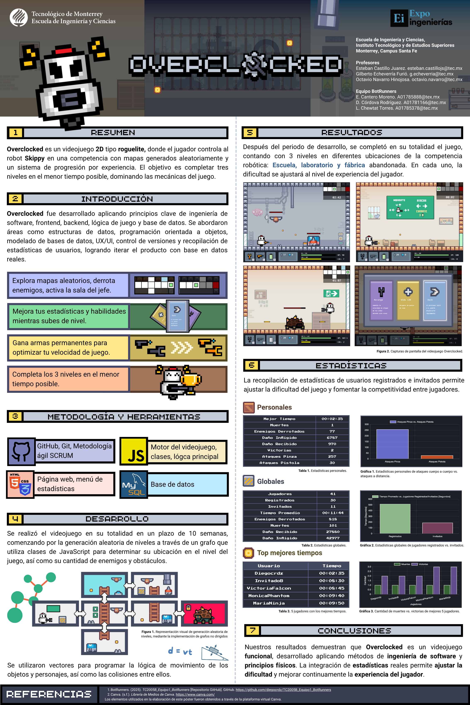
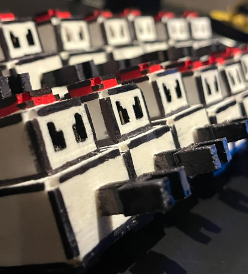
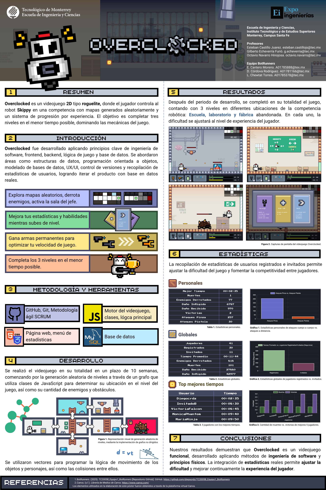
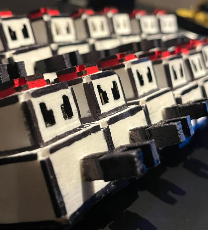

Experiencia Profesional
Proyectos y experiencias que han marcado mi trayectoria profesional
Desarrollador Full Stack - Sistema de Registro de Emergencias (SRE)
Tecnológico de Monterrey / Secretaría de Gestión Integral de Riesgos y Protección Civil
Desarrollo completo de aplicación web con React-Admin y base de datos en MongoDB en 10 semanas, desde la etapa de elicitación, especificación de requerimientos, codificación, pruebas y despliegue; aumentando la eficiencia de llenado de reportes en un 50%. Implementación de funciones de accesibilidad web, filtros avanzados en panel de estadísticas y administración, aumentando la eficiencia administrativa en un 70% para la toma de decisiones basada en datos. Presentación final de la aplicación con la Alcaldía Cuajimalpa, logrando obtener 1er lugar de los 10 equipos participantes.
Desarrollador Full Stack - Overclocked
Tecnológico de Monterrey
Participé en el desarrollo completo del videojuego Overclocked, género roguelite 2D enfocado en competencia y optimización. También desarrollé el diseño, programación y despliegue del sistema, incluyendo la interfaz web y base de datos.
 



Becario en Inteligencia Artificial
RSec
Empleo de medio tiempo donde desarrollé durante 3 meses un proyecto de uso de modelos de Inteligencia Artificial, con el objetivo de traducir conversaciones en tiempo real para reuniones virtuales.
Tecnologías: Python, Modelos IA, Express.js
Capacitación en Ciberseguridad
RSec
Programa de capacitación para nuevos talentos en Ciberseguridad en RSec, empresa multinacional especializada en ciberseguridad. La capacitación consistió en temas de Seguridad de Datos, Análisis de Riesgos, Cumplimiento y Normativas de Seguridad (ISO, NIST, NYCE), Informática Forense, Máquinas Virtuales (Kali Linux).
3er lugar - Expo Ingenierías 3ra edición
Tecnológico de Monterrey - Región Ciudad de México
Simulación en MATLAB de limpieza de paneles solares con campos eléctricos, con el fin de reducir desperdicios de agua.

Servicio Social
Microsoft México - Tecnológico de Monterrey
Curso de aprendizaje en Centro Comunitario de Aprendizaje sobre herramientas básicas de Microsoft en el Tecnológico de Monterrey, Campus Santa Fe. El curso consistió en la enseñanza de programas de Microsoft como Word, Excel, PowerPoint, Teams y programación en Python para 2 beneficiarios.
Sebas Night Runner (SNR)
Tecnológico de Monterrey
Videojuego 2D estilo Runner basado en romper una puntuación y conseguir monedas para desbloquear personajes o niveles. Desarrollado en el lenguaje de programación C# en Unity. Realicé tanto la programación del videojuego como cada uno de los diseños y animaciones utilizados en el mismo.
Marketing y Estrategias Digitales
Feeka Photo - Tecnológico de Monterrey
Desarrollé durante 4 meses un proyecto de Market Research para una empresa fotográfica llamada Feeka Photo. Durante la misma, analicé su mercado objetivo, realicé estudios de marketing a más de 100 personas en diversos rangos de edades para analizar la retención de la marca y la forma en la que se puede mejorar la relación con el consumidor. Se analizaron diversas formas de actualizar la página web para fabricar una experiencia accesible, amigable e interesante para el público tanto en navegadores web como dispositivos móviles.
Prototipo SafeWalk
Tecnológico de Monterrey
Desarrollé durante 5 días un prototipo funcional a escala de un producto llamado SafeWalk que se coloca en los semáforos cercanos a cruces peatonales. El objetivo del proyecto fue reducir los accidentes en cruces peatonales debido al tiempo del mismo en ciudades con gran población. El proyecto fue realizado y clasificó para una competencia de prototipos con problemáticas en sectores similares. Se realizó a través de programación en Micro:bit con JavaScript.